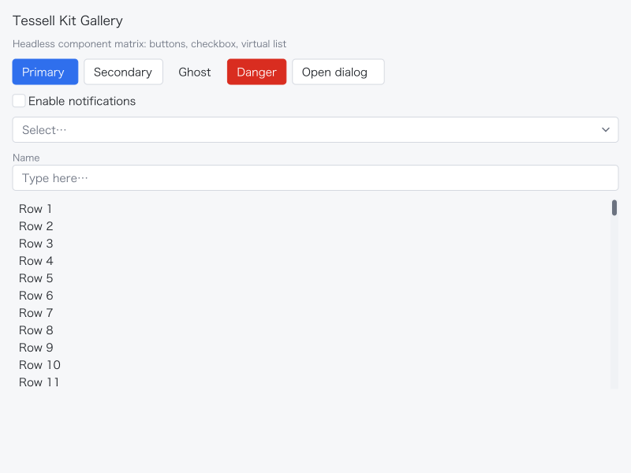

Crystal · retained-mode · 自绘
Tessell Kit
Tessell 的组件库：Button、Checkbox、Text、Input、Select、Tooltip、Dialog、ScrollView、VirtualList，共用一套设计 token 与键盘/a11y 契约。
组件
9 个组件的状态、variant、键盘路径与主题 token，逐页写清限制。
设计 token
颜色、间距、圆角、尺寸档位来自 Theme::Metrics，组件不得另造一套。
组件契约
身份与状态、尺寸与布局、失效最小化、输入与无障碍的公共约定。
跨平台方案
Windows / macOS / Linux 按 L0–L3 分级收口，未验证项显式标注。

Kit gallery 无窗口渲染产物：由 PaintList 生成，证明绘制命令与主题组合，不等于真实窗口上屏证据。